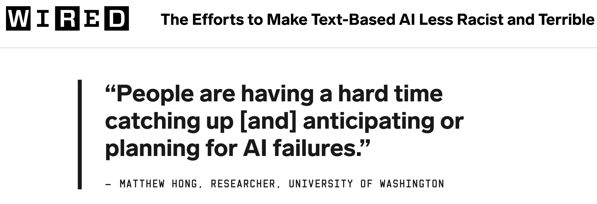
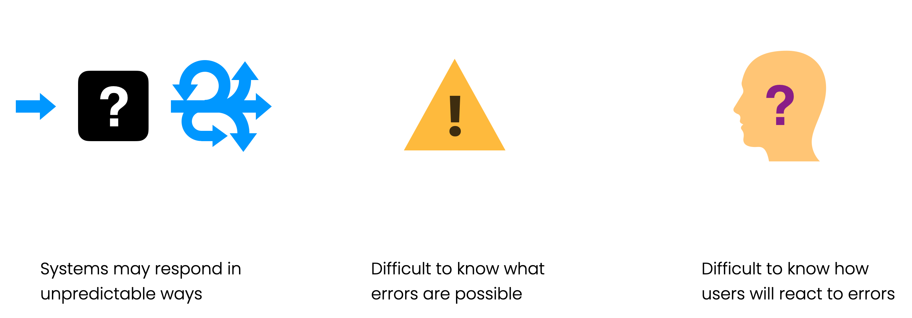
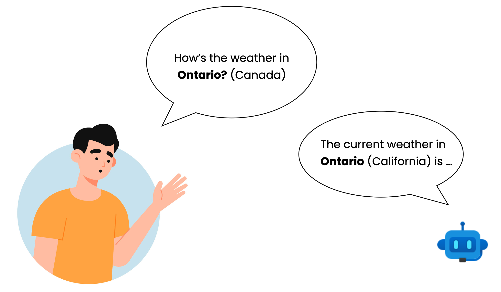
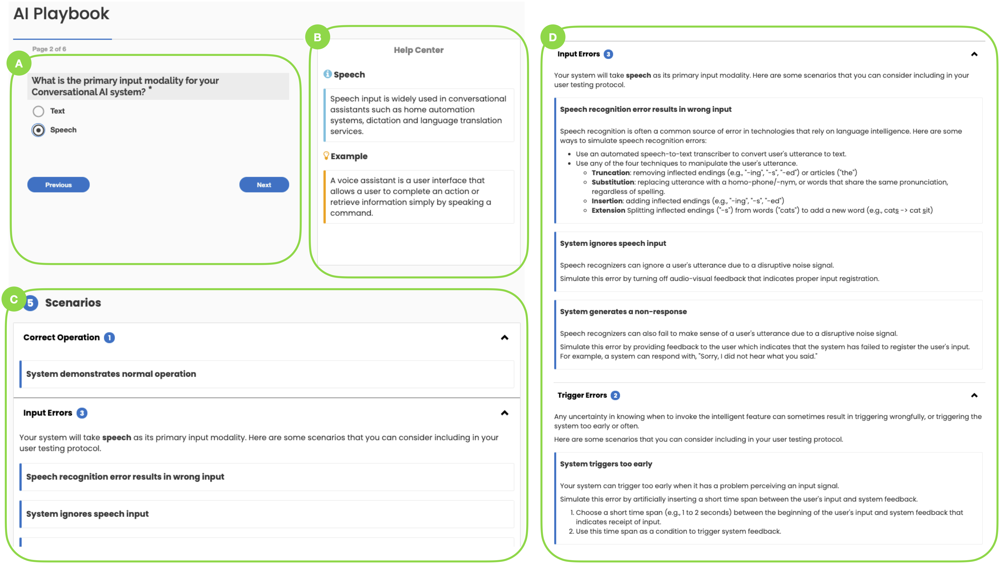

Planning for Natural Language Failures with the AI Playbook

We all know that AI can dramatically improve the user experience of software products. But there are a lot of growing pains with AI and the current process for prototyping AI experiences is not as efficient as we want it to be. Product teams working with natural langauge AI products such as chatbots or writing assistants are experiencing major challenges because they are discovering unexpected errors after deploying the product to end-users. Based on a systematic characterization of common failure scenarios in natural language-based systems, we developed the AI Playbook to help product teams proactively address AI failures in early stages of prototyping.
- Project Date: Apr - Jul 2020
- Affiliations: Microsoft Research AI
- Funding: Microsoft
- My Role: Study design, study protocol development, data collection, data analysis, tool development, and paper writeup
- Collaborators: Adam Fourney, Derek DeBellis, and Saleema Amershi
Background
{kind=link}

There are several reasons that challenge our ability to prototype AI experiences:
- Many AI solutions are built on probabilistic machine learning models
- The stochastic nature of these solutions makes it difficult to predict failure behaviors of a system.
- Design practitioners have varying levels of AI expertise to anticipate and account for all types of AI failures.
- Most importantly, it's difficult to know how users will react to failures in realistic scenarios.
This leaves design practitioners with no choice but to take a reactive approach to address errors in the prototyping process. But what kind of failure behaviors are we dealing with? It is difficult to characterize what a failure behavior is because its meaning can change depending on whether it is interpreted by the end user or the system developer.
{kind=link}

Suppose we are planning a trip to Ontario (which is in Canada) and ask an AI assistant about its weather. Our assistant, however, might think we are talking about a city in California, which is close by and happens to carry the same name Ontario with the same spelling and pronunciation. In this case, the system response is considered a failure from the user's perspective because we intended to ask about the weather in a different location. The developer on the other hand, might have written an algorithm to assume that the user is asking about the weather closest to their current location. So how can we help product teams anticipate failures of this nature?
To answer this question, we scope our research to focus on failure behaviors that are expected to affect the end-user.
Goal
The goal of this research is to understand how we can help product teams working on natural language products address AI failures early enough in the prototyping process.
Methods
- Semi-structured interviews with 12 practitioners (user researchers, designers, and program managers)
- Development of taxonomy of common AI failures in natural language products
- User study with 9 practitioners (prior participants)
We developed our taxonomy starting with 8 experts in NLP research, by:
- Capturing a wide range of natural language scenarios from previous work on information retrieval, dialogue management, speech recognition, and slot filling, etc.
- Organizing the scenarios based on failures that fall under attention, input perception, understanding, and response generation.
- Walking through concrete real-world examples of NL tasks for each scenario (e.g., extracting a meeting request from an email, or booking a flight with a voice assistant, etc.).
Taxonomy of AI Failure Types and Scenarios in NL Products
After multiple rounds of iteration, we arrived at 16 different failure scenarios that may occur in the context of natural language (NL) based products.
| Failure Type | Failure Source | Failure Scenario | Example Failure Scenario with NL Products |
|---|
| Attention | Missed trigger | System fails to detect a valid triggering event | [Scheduling assistant] fails to detect a meeting request in an email. [Voice assistant] fails to detect a wake word. |
| Spurious trigger | System triggers in the absence of a valid triggering event (it triggers when not intended). | [Scheduling assistant] mistakes meeting minutes as a new meeting request. [Voice assistant] mistakes background speech as a wake word. |
|
| Delayed trigger | System detects a valid triggering event, but responds too late to be useful. | [Scheduling assistant] detects a meeting request, but offers support only after the user has already manually scheduled the meeting. | |
| Perception | Truncation | System begins capturing input too late, or stops capturing input too early, and thus acts only on partial input. | [Voice assistant] interprets a pause as the end of an utterance, and answers before the user has finished speaking. |
| Overcapture | System begins capturing input too early, or stops capturing input too late, and thus acts on spurious data. | [Voice assistant] captures user’s intended query along with a few more words spoken after the query. | |
| Noisy channel | User input is corrupted by spelling errors in written text, or background noise in audio input. | [Search engine] user misspells their search query. [Voice Assistant] background noise, such as music, makes speech less discernible. |
|
| Transcription | System generates common transcription errors such as homonyms, homophones, plural word forms, etc. | [Automatic captioning service] fails to transcribe certain speech utterances by adding or removing inflected endings (e.g., -ing, -s, -ed). | |
| Understanding | No understanding | System fails to map the user’s input to any known action or response category. | [Virtual assistant] responds “I’m sorry, I don’t know how to answer that question.” |
| Misunderstanding | System maps the user’s input to the wrong category of action or response. | [Shopping assistant] mistakes an item refund request for an item exchange request. | |
| No understanding | System correctly infers some aspects of the user’s intent, (e.g., correct action or response category) but get some details wrong. | [Travel assistant] mistakes the origin for the destination. [Scheduling assistant] fails to consider a location’s timezone in a meeting request. |
|
| Ambiguity | There may be several reasonable interpretations of the user’s intent, leading to ambiguity. The system fails to correctly resolve ambiguity. | [Search engine] responds to the query “US Open” by returning results for tennis, when the user intended golf. [Scheduling assistant] sends a meeting request to the wrong “John”. |
|
| Response generation | Action execution | System fails in executing the desired action. | [Travel assistant] attempts to re-book a trip by canceling and reissuing a ticket, but fails partway, leaving the reservation in an unknown state. |
| Generative response | System generates an incoherent, inappropriate, factually incorrect or partially correct response. | [Social chatbot] produces an offensive response to a user’s input. | |
| Ranked list | System produces a ranked list with low precision, recall, or result diversity. | [Presentation design assistant] offers five recommended slide designs, but two designs are duplicates, or are otherwise indiscernible. | |
| Binary classification |
System generates a false negative or false positive response. | [Spam filter] misclassifies an email as unsolicited spam. [Content moderation system] misclassifies a comment as obscene. |
|
| Multi-class classification | System fails to produce correct classifications among close or distant categories. | [Email client] classifies a receipt as a promotional email. |
AI Playbook Design
Using our taxonomy as a foundation, we designed the AI Playbook, which is an interactive survey that allows practitioners to walk-through a product or feature that they are designing, input modality, trigger, delimiter, and the form of the expected response.
{kind=link}

The AI Playbook consists of four main features:
- Interactive Survey (A) allows users to navigate between different question and answer pairs as they describe their envisioned AI scenario
- Help Center (B) displays supportive information (e.g., description and examples) tailored to the user's selected answer choice
- Scenario Builder (C) interactively builds up related scenarios to test, allowing users to efficiently explore the consequences of different design choices
- Playbook Report (D) outputs a report of recommended test scenarios along with contextualized explanations and examples to further aid in developing and testing prototypes.
Imagine you were a designer working on a voice-based personal assistant. You would start with Conversational AI, then move on to select speech as the primary input. Your system will have a clear way of knowing when to trigger because it listens for a wake-word (such as "Alexa" or "Hey Siri"). As you continue to answer the questions, the Scenario section interactively builds up the related failure scenarios, which allows you to explore the consequences of the different design choices. In the end, the Playbook then outputs a full report of test scenarios and actionable guidance on how to simulate them. For example, we can simulate a list with reduced diversity by inserting a duplicate item to the list or adding an article to a list item.
Key Findings
Challenges Prototyping AI Experiences
Our formative interviews with 12 design and AI practitioners from a large technology company revealed three main challenges.
- Practitioners rarely engaged in any prototyping for new AI experiences because it slows down their pace of development.
- When people were prototyping, we found that product teams were so focused on the “hero or golden path scenarios” that would only happen in ideal circumstances, which made it easier for people to overlook failure scenarios.
- Also, different product teams often experienced breakdowns in interdisciplinary communication due to having varying levels of AI expertise.
Opportunities for Addressing AI Failures With the AI Playbook
We evaluated the Playbook in a think-aloud session with 9 of our previous participants. Three key insights emerged from our evaluation of the AI Playbook.
- Many saw how the AI Playbook could help them step off idealized interaction scenarios by systematically navigating the error space and standardizing the types of errors that can be included in testing their prototype.
- Another perceived benefit of the tool came from its ability to show the full range of options and consequences of people's design decisions within a short 3-4 minutes of their time.
- We found the potential for the tool to help different teams overcome breakdowns in communication by directing their attention to the same terminology and scenarios in ways that both designers, machine learning engineers, and data scientists can relate to.
Presentation & Demo
This study only focused on failure scenarios affecting the end-user and occurring within a single interaction session. There are endless possibilities for extending the AI Playbook to different scenarios of use. Besides considering failures that impact other stakeholder users and occur overtime in long-term interaction sessions, we should begin to address failures that are contingent on the end-user's personal, cultural, and societal context. Tackling these failures, however, will come with another set of challenges as it requires access to longitudinal and personal data, which may not exist yet or add risk to a user's privacy. In light of these considerations, I'm happy to announce that the AI Playbook (rebranded as HAX Playbook) is now available as an open source project and can be extended to accommodate multiple scenarios of use and the specific needs of product teams.